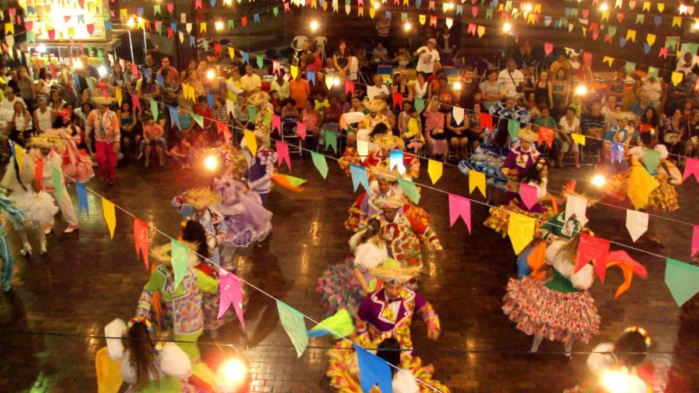
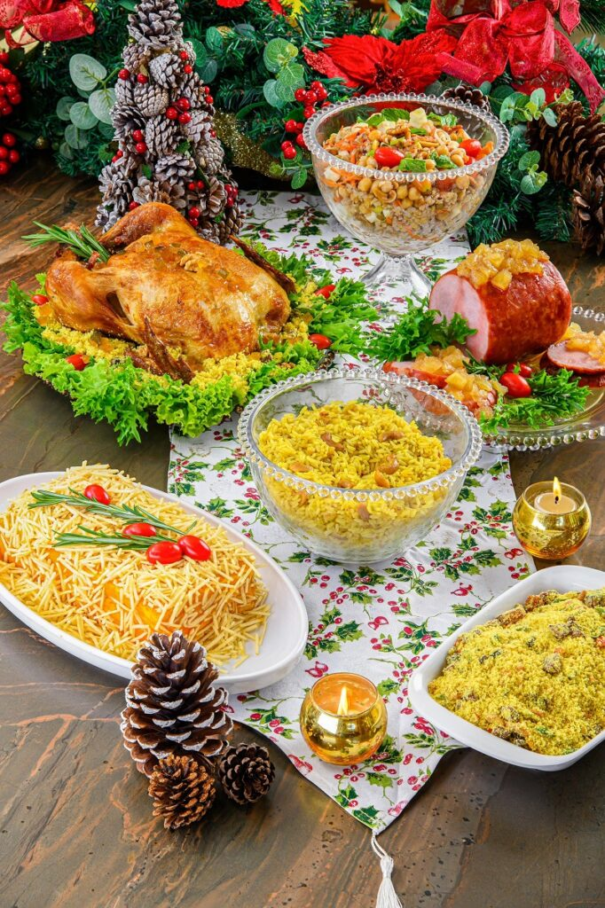
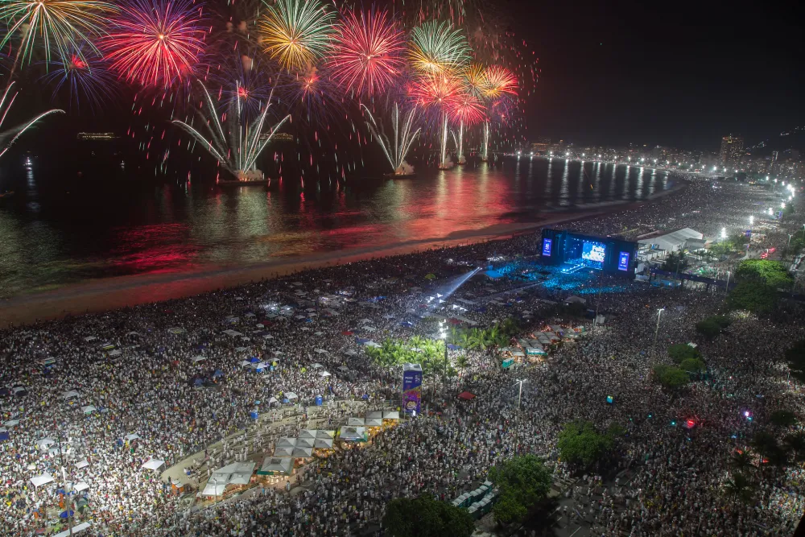

Brazilian Celebrations: Traditions, Colors & Stories

- 
- 
- 

Carnaval
The biggest celebration of joy and culture in Brazil.
Carnaval in Brazil has roots in European pre-Lent festivals, brought by the Portuguese in the 17th century. Over time, it mixed with African rhythms and Indigenous traditions, evolving into the vibrant celebration seen today.
The modern Carnaval we know, with samba schools, parades, and elaborate costumes, began in Rio de Janeiro in the early 20th century, following the rise of samba as a national musical style. Each region then created its own version, from Rio’s glamorous Sambadrome parade to Salvador’s high-energy trio elétrico.
Today, Carnaval represents freedom, cultural fusion, and the joy of Brazilian creativity, attracting millions of visitors every year.
Festa Junina
Brazil’s traditional winter festival filled with food, music, and rural charm.
Festa Junina is inspired by European midsummer celebrations honoring Saints Anthony, John, and Peter. Brought to Brazil by Portuguese colonizers, the festival blended with the customs of Indigenous and rural communities.
By the late 19th century, Festa Junina had become deeply connected to Brazil’s interior countryside culture, which is why traditional clothes, square dancing (quadrilha), and corn-based foods are so prominent.
Today, the celebration honors Brazilian rural heritage, featuring bonfires, folk music, colorful flags, and delicious seasonal foods.
Natal Brasileiro (Brazilian Christmas)
A tropical Christmas full of warmth, family, and tradition.
Brazilian Christmas combines Catholic traditions introduced by the Portuguese with local customs shaped by warm summer weather. Midnight mass, called Missa do Galo, has been celebrated since colonial times.
Over the years, families added new influences from Europe and the U.S., such as decorated trees and Santa Claus (Papai Noel), while keeping classic Brazilian dishes like chester, farofa, and rabanada.
Christmas in Brazil is a mix of religion, family gatherings, and festive food, celebrated outdoors and late into the warm December night.
Réveillon (New Year’s Eve)
A night of rituals, hope, and spectacular beach celebrations.
Brazilian New Year’s traditions combine European customs with strong influences from Afro-Brazilian religions, especially Candomblé and Umbanda.
Wearing white, for example, comes from Afro-Brazilian ceremonies honoring Yemanjá, goddess of the sea. The practice of jumping seven waves to attract luck also comes from these spiritual traditions.
In the 20th century, Rio de Janeiro popularized huge beach celebrations with fireworks, especially in Copacabana, which is now one of the most famous New Year’s parties in the world.
Today, Réveillon symbolizes renewal, gratitude, and hope for the year ahead.
Páscoa (Brazilian Easter)
A sweet celebration mixing faith, family, and chocolate.
Easter was introduced to Brazil through Catholic traditions brought by the Portuguese, who emphasized Good Friday rituals, fasting, and church ceremonies.
In the 20th century, the custom of giving chocolate eggs became popular, influenced by European traditions. Brazilian bakeries quickly embraced the trend, turning Easter eggs into big, colorful, and fun gifts, especially for children.
Easter in Brazil blends religious meaning with the joy of sharing chocolate and spending time with family.